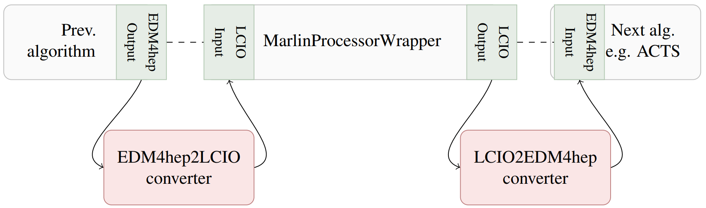

Wrapping Marlin processors in Gaudi
This page describes how to run existing Marlin processors within the Gaudi
framework. Marlin and Gaudi are two event processing frameworks available in
the Key4hep software stack. The former was originally developed by the linear
collider communities in iLCSoft, while the latter originally comes from LHCb. It
is also the event processing framework for future developments within Key4hep.
To enable using the existing functionality that has been developed for the
linear collider studies and also to allow for a gradual migration the
MarlinProcessorWrapper has been developed. It allows to run Marlin processors
within the Gaudi framework and it’s usage is described
below
One of the major differences between Marlin processors and (Key4hep) Gaudi algorithms is the event data model (EDM) that they use. While Marlin uses LCIO, Gaudi in Key4hep uses EDM4hep. Since EDM4hep is based on LCIO the differences are limited and it is possible to convert between the two EDMs as necessary. We will also show how to do this below.
The following descriptions assume that you are somewhat familiar with how to
configure and run Gaudi via k4run, i.e. most of the snippets will just show
the bare minimum of configuration, but will usually not work without
modifications (e.g. in most cases the ApplicationMgr as well as putting all
the configured algorithms into the list of algorithms to run is missing
entirely).
The MarlinProcessorWrapper Gaudi algorithm
The MarlinProcessorWrapper is a standard Gaudi algorithm and can be used just
like all others, i.e. in a Gaudi options file we simply have to import it via
from Gaudi.Configuration import *
from Configurables import MarlinProcessorWrapper
It can then be configured just like any other algorithm by instantiating it and
passing the necessary parameters to it. Each Marlin processor that you want to
wrap needs its own instance. The main configuration parameters for the
MarlinProcessorWrapper are
ProcessorType- a string with the Marlin processor type. The type is usually the class name of the Marlin processor, and corresponds to thetypeattribute in a Marlin XML configuration for a processor.Parameters- a dictionary of string keys and list of string values. Each parameter of the Marlin processor needs its own entry in this dictionary and all parameter values have to be strings as the parsing is done internally.
As a very brief example; The following snippet of a Marlin XML steering file
<processor name="StatMonitorAlg" type="StatusMonitor">
<parameter name="HowOften" type="int">1</parameter>
</processor>
could be converted to the following snippet of a Gaudi options file
StatMonitorAlg = MarlinProcessorWrapper("StatMonitorAlg")
StatMonitorAlg.ProcessorType = "StatusMonitor"
StatMonitorAlg.Parameters = {"HowOften": ["1"]}
Note that wrapped Marlin processors still expect their inputs in LCIO format! You can either read in the data in that format directly, or use converters to convert from EDM4hep to LCIO first.
Reading and writing LCIO events with Gaudi
In order to read in event data in LCIO format into the Gaudi world it is
necessary to use the LcioEvent Gaudi algorithm. It is configured in the same
way as normal Gaudi algorithms, i.e. in a minimal standalone form
from Gaudi.Configurables import *
from Configurables import LcioEvent
read = LcioEvent()
read.Files = ["inputfile1.slcio", "inputfile2.slcio"]
For writing LCIO events from Gaudi, simply use a MarlinProcessorWrapper to
wrap a LCIOOutputProcessor, e.g.
from Configurables import MarlinProcessorWrapper
Output_DST = MarlinProcessorWrapper("Output_DST")
Output_DST.ProcessorType = "LCIOOutputProcessor"
Output_DST.Parameters = {
"DropCollectionNames": [],
"DropCollectionTypes": ["MCParticle", "LCRelation", "SimCalorimeterHit"],
}
Automatic conversion of Marlin XML steering files
We provide the convertMarlinSteeringToGaudi.py converter script to
automatically convert Marlin steering files in XML format to Gaudi options
python files. Usage is as simple as
convertMarlinSteeringToGaudi.py <input-steering.xml> <output-gaudi-options.py>
Limitations
This converter script handles almost everything, but there are a few short-comings which it cannot yet handle:
Marlin XML steering files can have
includestatements, e.g.<include ref="Tracking/TrackingDigi.xml"/>. These cannot be resolved by the converter script, and it will issue a warning. The easiest way to fix this is to simply runMarlin -nto resolve all these statements and then run the converter script again on the output file which will be named<inputfile-base>Parsed.xml.Marlin has a mechanism to resolve constants that are defined in the
constantssection and used like${someFancyConstant}in the following. The converter script and the converted Gaudi options file handle these in general. However, it might be necessary to change the values of the constants inside theCONSTANTSdictionary that can be found at the beginning of the created options file. Alternatively one can useMarlin -nwith e.g.--constant.someFancyConstant=<value>to set the values in the Marlin steering file first and again parse the converted output.Marlin supports conditional execution of processors via the
conditiontag. These conditions can be configured via constant values from theconstantssection in the steering file, but in principle these can also be runtime values that are set, e.g. by a previously run processor. At the moment dynamic conditions (where the value might change on an event by event basis) are not supported by Gaudi. Additionally static conditions are only partially handled by the converter script. While it converts the necessary configuration, it will by default not put the converted algorithm into thealgListlist of algorithms to run and you might have to comment / uncomment the algorithms you actually want to run.If the value of the
LCIOInputFilesis empty in the input XML file, the converter script will put a value of"None"into theread.Filesparameter. You will have to change this either in the steering file or them in via--LcioEvent.Files.Marlin is in some cases able to replace
constants with the values stored in environment variables of the same name. In Gaudi these have to be retrieved from the environment explicitly viaos.environ.
Using the EDM converters
The converters between EDM4hep and LCIO are implemented as so called
GaudiTools. They can be attached to any MarlinProcessorWrapper algorithm
that is configured in the Gaudi options file. The tools are called
Lcio2EDM4hepTool and EDM4hep2LcioTool respectively. Each wrapped processor
can be equipped with both tools, so that it is possible to e.g. convert input
from EDM4hep to LCIO and output from LCIO to EDM4hep again:

The (very) basic usage of the converter tools looks like the following
Instantiate the necessary tools (and configure them as desired)
Attach the tools to a wrapped marlin processor via the
Lcio2EDM4hepTooland/orEDM4hep2LcioTooloptions
from Configurables import EDM4hep2LcioTool, Lcio2EDM4hepTool
edm4hep2LcioConv = EDM4hep2LcioTool("EDM4hep2Lcio")
lcio2edm4hepConv = Lcio2EDM4hepTool("Lcio2EDM4hep")
wrappedProcAlg = MarlinProcessorWrapper("ProcessorToWrap")
wrappedProcAlg.Lcio2EDM4hepTool = lcio2edm4hepConv
wrappedProcAlg.EDM4hep2LcioTool = edm4hep2LcioConv
An arbitrary number of converter tools can be instantiated and attached to Gaudi algorithms (taking into account that each algorithm can at most have one converter for each direction attached). If you have multiple tools make sure to give them meaningful names in order to avoid any confusion.
Configuration options
By default each converter tool will try to convert the complete event content that is currently available in the transient event store for the corresponding source format. It will skip the conversion of a collection if the same collection already exists in the other format. This check is done by collection name. However, it is possible to control the conversion process with a slightly higher granularity with two options that can be configured
collNameMapping- this is a dictionary of collection names, where a source collection name is mapped to a target collection name during the conversion. This makes it possible to rename collections on the fly. In combination with theconvertAlloption this also allows to select the collections that should be converted. In that case if you want to keep the original collection name you can simply repeat it.convertAll- set this toFalseif you do not want to convert all collections, but rather would like to select a subset to convert.
As an example, if you only want to convert the MCParticles collection, you
would configure the tool like this
edm4hep2LcioConv = EDM4hep2LcioTool("EDM4hep2Lcio")
edm4hep2LcioConv.convertAll = False
edm4hep2LcioConv.collNameMapping = {"MCParticles": "MCParticles"}
On the other hand if you want to convert all collections, but rename the
MCParticle (LCIO) input collection to the MCParticles (EDM4hep) output
collection in the process, you would configure the tool like so
lcio2edm4hepConv = Lcio2EDM4hepTool("Lcio2EDM4hep")
lcio2edm4hepConv.collNameMapping = {"MCParticle": "MCParticles"}